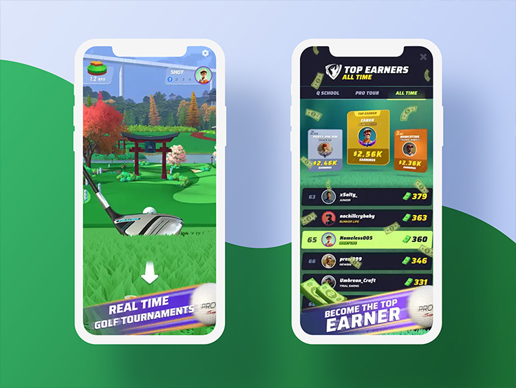

Heavy identity content in a live mobile product
Pro Golf included a substantial personalisation experience around avatars and other player identity content. The system had to connect API/inventory state with Unity UI and large visual assets while remaining responsive on mobile hardware.
Animated avatar content was particularly expensive: an avatar could have multiple idle, win, and lose animations. Treating all of that content as an always-loaded package would increase download time and memory residency.
My responsibility
I architected and implemented the Personalisation module, with the architecture reviewed by my lead. My ownership included the Unity-side UI architecture, services/data flow, API/DTO integration, asset catalog and Addressables behavior, and the progressive loading strategy for heavy animated content.
What I owned
- Personalisation module architecture and implementation
- Unity-side UI architecture
- Services/data flow and API/DTO integration
- Asset catalog and Addressables behavior
- Progressive loading strategy for heavy animated content
Review
- The module architecture was reviewed by my lead.
Separating presentation, state, and assets
The module has two related paths: a code path that keeps UI independent of API details, and an asset path that decides what content is resident at any time.
- UI / View
- Presenter
- Facade
- Services / DTO data
- API / backend integration
- Personalisation metadata
- Preview imageshown immediately
- First playable animation
- Progressive background downloadsremaining animations
- Release / unloadbased on navigation
Architecture themes
- MVP, interfaces, and a facade over services
- Dependency injection to supply dependencies; services, interfaces, facades, and events provide the collaboration boundaries
- DTO/API integration
- ScriptableObject-authored/catalog data where appropriate
- Addressables
Make heavy personalisation feel immediate
Waiting for every animation asset before showing the selected avatar would create a poor user experience. Keeping every animation resident would create a memory problem.
The loading strategy therefore prioritized perceived responsiveness. A lightweight preview/still image could appear immediately. The system then downloaded enough content to begin animation playback, while additional animations continued loading progressively in the background.
Key tradeoff
First-use responsiveness vs. content completeness vs. memory/download cost.
Keep API/player state separate from presentation
Personalisation state depended on player inventory, purchases, catalog metadata, and backend/API responses. The module used presenters, a facade, services, interfaces, and DTO boundaries so that UI behavior did not become tightly coupled to API implementation details.
That separation also made the system easier to integrate into other product surfaces such as tournaments and leaderboards.
Implementation highlights
- Player inventory/purchase state
- DTO/API communication
- Avatar/banner/title-style personalisation content
- Addressables-based asset loading
- Preview-first rendering
- Progressive animation loading
- Navigation-aware preloading
- Explicit release/unload behavior
- Cross-product integration
- MVP / facade / services / interfaces / DI
Outcome
The system provided a production architecture for content-heavy personalisation while balancing responsiveness, memory residency, and asset download cost.
Asset loading is a product decision
The important lesson was that asset loading is a product-design problem as much as a technical one. The best loading strategy depended on where the user was going, what they needed to see immediately, and what content could safely arrive later or leave memory entirely.
Media & external evidence
